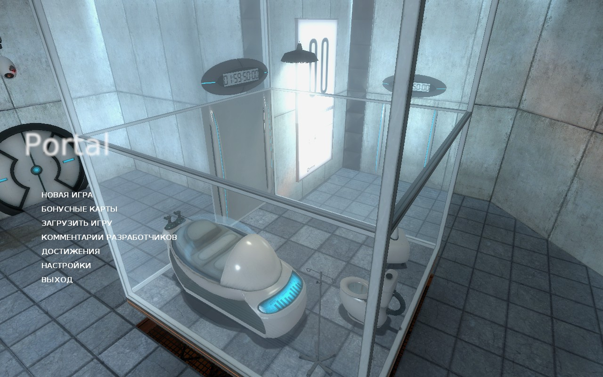
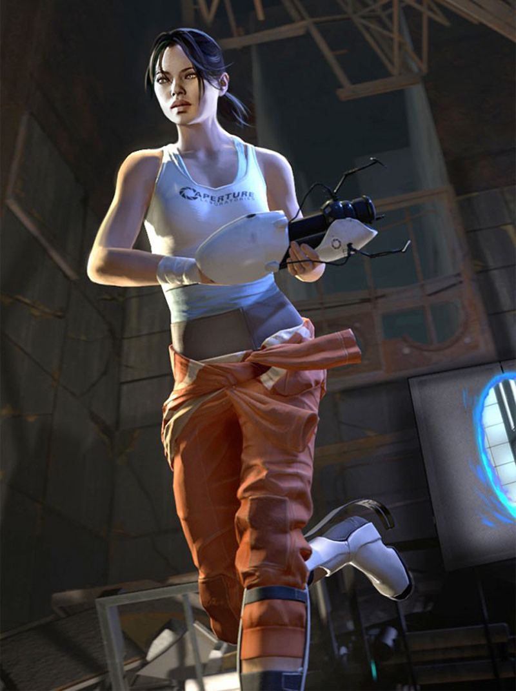
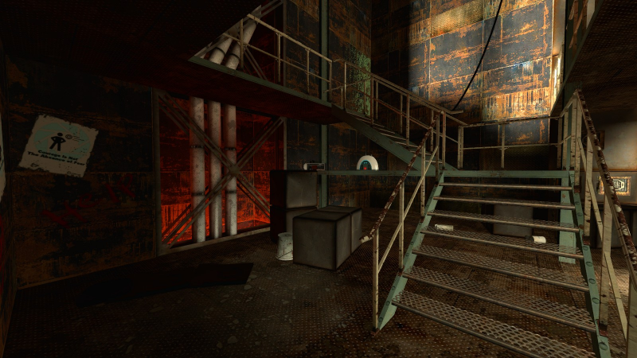

Главная героиня просыпается в капсуле внутри камеры отдыха со стеклянными прозрачными стенами. В камере, помимо капсулы, имеется столик, на котором стоит радиоприёмник и лежит планшет с информацией об испытаниях, а также имеется унитаз. За пределами камеры видны белые стены, полы и потолки коридора вокруг неё, а в одной из стен проделано окно с матовым стеклом в комнату наблюдения. Почти сразу после пробуждения девушки раздаётся механический женский голос, который приветствует героиню в Центре развития при Лаборатории исследования природы порталов (Aperture Science).

После вступительной речи голос предупреждает о мерах безопасности и открывает на стене
портальный проход. Передвигаясь по коридорам комплекса, Челл (так зовут героиню)
изучает свойства порталов. Изначально у неё нет ничего: порталы генерируются самостоятельно.
Однако спустя несколько комнат в руки героини попадает Переносное устройство создания
порталов, поначалу способное создавать один голубой портал. 
 В процессе прохождения комнат создаётся впечатление, что девушка — как мышь в лабиринте,
созданном некими учёными. По ходу эксперимента голос ГЛэДОС (GLaDOS, Genetic Lifeform
and Disk Operating System - Генетическая форма жизни и дисковая операционная система)
сопровождает персонажа.
Ближе к финальным тестам, когда в руках героини находится уже полноценная портальная
пушка, в одной из гладких и чистых комнат девушка находит проход за стену в небольшое
помещение с трубами, решётками, заводской подсобной обстановкой. Помещение выполнено
в оранжевых тонах, в отличие от бело-голубого оформления тестовых комнат, кроме того,
в нём находится радио, аналогичное виденному вначале, с той же самой мелодией.
Компьютерный голос никак не реагирует на находку героини. Позже девушка находит ещё
одну подобную комнату, но бо́льшую размером. Стены таких комнат исписаны чем-то
наподобие крови, в некоторых есть фотографии и другие бумаги. Кровавые надписи
разнообразны, однако в большом числе содержится фраза «Торт — ложь». Эта фраза должна
быть интересна в связи с тем, что женский голос периодически обещает тортик в конце
испытания.
В процессе прохождения комнат создаётся впечатление, что девушка — как мышь в лабиринте,
созданном некими учёными. По ходу эксперимента голос ГЛэДОС (GLaDOS, Genetic Lifeform
and Disk Operating System - Генетическая форма жизни и дисковая операционная система)
сопровождает персонажа.
Ближе к финальным тестам, когда в руках героини находится уже полноценная портальная
пушка, в одной из гладких и чистых комнат девушка находит проход за стену в небольшое
помещение с трубами, решётками, заводской подсобной обстановкой. Помещение выполнено
в оранжевых тонах, в отличие от бело-голубого оформления тестовых комнат, кроме того,
в нём находится радио, аналогичное виденному вначале, с той же самой мелодией.
Компьютерный голос никак не реагирует на находку героини. Позже девушка находит ещё
одну подобную комнату, но бо́льшую размером. Стены таких комнат исписаны чем-то
наподобие крови, в некоторых есть фотографии и другие бумаги. Кровавые надписи
разнообразны, однако в большом числе содержится фраза «Торт — ложь». Эта фраза должна
быть интересна в связи с тем, что женский голос периодически обещает тортик в конце
испытания.
Наконец, приходит черёд последнего, девятнадцатого теста, в ходе которого голос особенно активно напоминает об обещанном пироге. В самом конце коридора неожиданно оказывается пламя, к которому неумолимо приближается девушка — туда её движет платформа. В это время ГЛэДОС успокаивает Челл, говоря, что лабораторное оборудование термоустойчиво и не понесёт ущерба. Героиня успевает спастись. ГЛэДОС, не ожидавшая такой расторопности, приказывает девушке остановиться, говорит, что пошутила и на самом деле пламя было последним испытанием. Беглянка не слушается и уже уверенно передвигается по подсобным помещениями, аналогичным уже виденным ей. Повсеместно в таких помещениях её преследуют кровавые символы, указывающие, куда идти (очевидно, сбегает она не первая), и механический женский голос, доносящийся то глухо, то ясно из устройств, прикреплённых кое-где по стенам. В задворках тестового лабиринта девушка не находит ни одного человека и в конце концов достигает круглой комнаты с огромной механической конструкцией, висящей с незримого потолка. Эта конструкция и разговаривала с героиней всю игру. Машина боится скорого конца и всячески пытается выкрутиться, насколько ей может хватить её компьютерного интеллекта, однако, сама того не ведая, выдаёт информацию о том, что она уничтожила всю лабораторию, выпустив в помещения нейротоксины. Этот же самый газ может убить девушку, если она не уничтожит машину в течение пяти ближайших минут. Спустив в утилизатор четыре мозговых центра компьютера, похожих на шары со светящимся сектором, героиня устраивает огромный взрыв. Перед своим уничтожением машина заявляет, что снаружи произошло нечто ужасное, и некая могущественная сила угрожает всему, и лишь она, машина, способна была защитить девушку от этой силы. После взрыва девушку и остатки машины поднимает в небо и весь вид заливает белым светом. На последних кадрах видно внешний мир: зелёные растения и КПП на въезде в Лабораторию исследования природы порталов, засыпанный различными обломками. Затем кто-то с механическим звуком подходит сзади к Челл и мужским компьютеризированным голосом говорит: «Благодарим вас за принятие позы ожидания распорядителя вечеринки», после чего оттаскивает её с места. После демонстрируется короткая заставка. Камера пролетает по техническим каналам Лаборатории, мимо различных труб и иных конструкций. В конце полёта зритель видит тёмную комнату, заставленную стеллажами, на которых лежат сферы, внешне схожие с мозговыми центрами ГЛэДОС. В центре комнаты стоит тортик со свечкой и Куб-компаньон. Ряд из сфер поочерёдно включается, опускается механическая рука и тушит свечу. Начинаются титры, во время которых звучит финальная песня «Still Alive». В ней ГЛэДОС поёт о том, что она всё ещё жива и переживёт девушку-беглянку, несмотря на то, что та «разбила ей сердце на куски и бросила каждый кусочек в огонь».